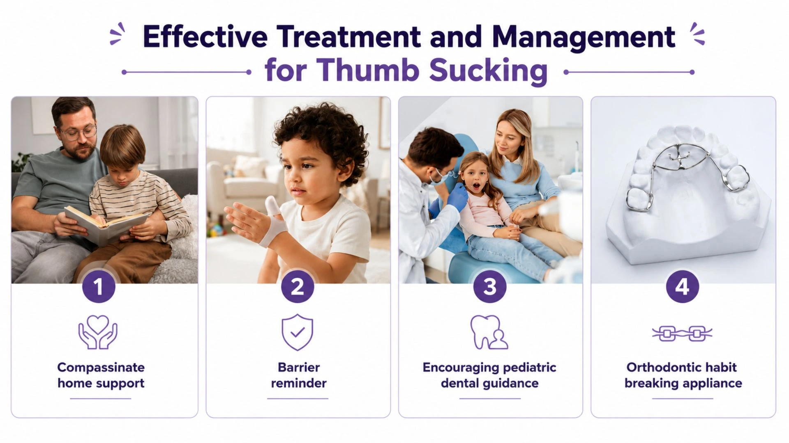

Introduction
A small habit like thumb sucking may seem harmless—but could it affect your child's smile in future? Thumb sucking is a common self-soothing habit in infants and toddlers and is usually a normal part of early childhood.
However, when thumb or finger sucking continues for too long, it can affect teeth alignment, jaw development, bite formation (how the upper and lower teeth meet when biting), and the way permanent teeth erupt. Understanding when the habit is normal and when it may need attention can help parents protect their child's oral health.
This article explains why children suck their thumb or fingers, when it becomes a concern, and how it can be managed with the right guidance and, if needed, professional evaluation.
What Is Thumb Sucking?
Thumb sucking is a common oral habit in which a child repeatedly sucks on their thumb, fingers, or sometimes a pacifier. It is one of the earliest self-soothing behaviors observed in infants and often begins even before birth, with some babies seen sucking their thumb during ultrasound scans.
For most children, thumb sucking is a temporary phase linked to comfort and security rather than a sign of an underlying issue. It becomes a matter of dental concern when it persists for a prolonged period, and continues into the years when permanent teeth begin to develop.
Why Do Children Suck Their Thumb or Fingers?
Rooting reflex – Infants are born with a natural sucking reflex that helps with feeding and self-soothing.
Children suck their thumb or fingers for several normal developmental reasons:
- Comfort and security – Thumb sucking can help a child feel calm, especially when tired, hungry, anxious.
- Habit formation – What starts as a soothing reflex can become a learned habit that continues out of routine rather than need.
- Sleep association – Many children suck their thumb specifically to fall asleep, similar to how some children rely on a pacifier or blanket.
- Teething relief – Babies may suck or chew on their fingers as a way to soothe their gums during teething.
If your baby is showing signs of teething, you can learn more about teething in babies, including common symptoms and ways to provide relief.
Is Thumb Sucking Normal?
Yes, thumb sucking is considered a normal part of early childhood development. Most infants and toddlers suck their thumb or fingers at some point, and this is typically not a cause for concern in the early years.
Awareness becomes important as the child grows older. Many children naturally stop the habit in early childhood, often on their own or with gentle encouragement, ideally by around the age of 3 years. When the habit persists beyond this window, particularly after permanent teeth start to erupt, it may begin to affect oral development and is worth monitoring more closely.
Effects of Thumb Sucking on Teeth
Prolonged and vigorous thumb sucking can place repeated pressure on the teeth, jaw, and roof of the mouth. The severity of the effect often depends on the intensity, frequency, and duration of the habit.
Does Thumb Sucking Affect Permanent Teeth?
Yes. The same changes described above, such as open bite, protruding front teeth, and a narrow upper jaw, can affect permanent teeth. This happens especially when the thumb sucking habit continues as the permanent teeth begin to erupt, usually around the age of 6 years.
- Some changes in baby teeth may improve after the habit stops, especially if it stops early.
- Changes affecting permanent teeth may not correct on their own and may need dental evaluation.
When Should Thumb Sucking Stop?
- Ideally, thumb sucking should stop by 3 years of age. The American Academy of Pediatric Dentistry (AAPD) encourages helping children stop by this age, as some dental changes can persist even after the habit stops
- It should certainly stop before permanent teeth begin to erupt (around the age of 6 years).
- Continuing beyond 3 years of age increases the risk of:
- Tooth misalignment
- Bite problems
- Jaw development issues
- Occasional thumb sucking in toddlers is usually not a concern.
- Intervention is recommended if the habit is:
- Frequent
- Intense
- Continues beyond the age of 3 years, especially into the school-going years.
Understanding when baby teeth appear and when they are replaced by permanent teeth, can help parents track their child’s normal dental development. Read our guide to Baby Teeth Eruption & Shedding for a complete timeline.
How to Help Your Child Stop Thumb Sucking?
Gentle, consistent strategies tend to work better than punishment or pressure, which can increase anxiety and reinforce the habit. Some approaches that may help include:
- Positive reinforcement – Praise or small rewards for periods without thumb sucking can encourage progress.
- Identifying triggers – Noticing when the habit occurs (boredom, tiredness, stress) can help address the underlying cause.
- Gentle reminders – A soft verbal cue or a bandage on the thumb can serve as a visual reminder without shaming the child.
- Involving the child – Explaining why the habit should stop, in age-appropriate terms, can encourage the child to take ownership.
- Comfort alternatives – Offering a soft toy or blanket during stressful moments can reduce reliance on thumb sucking for comfort.
Patience is important, as breaking the habit can take time and occasional setbacks are common.
Treatment for Persistent Thumb Sucking

When thumb sucking continues despite behavioral strategies, or if it has already started to affect tooth alignment, a dentist may recommend additional measures:
- A bitter-tasting substance or nail coating – A specially formulated bitter-tasting coating applied to the thumb or fingernails to help discourage thumb sucking.
- Thumb guards – Physical barriers that make thumb sucking less satisfying without restricting the child's hand movement.
- Habit-breaking dental appliances – In more persistent cases, a dentist may suggest an oral appliance that makes thumb sucking physically harder to continue. Common types include:
- Palatal crib – A fixed appliance attached to the upper back teeth with a small wire barrier behind the front teeth, preventing the thumb from pressing against the palate.
- Bluegrass appliance – A similar fixed design featuring a rotating wheel the child can move with their tongue instead of sucking their thumb.
- Removable habit appliance – A retainer-like device with a comparable barrier, suited to children who can reliably wear a removable appliance.
- Behavioral counseling – For habits linked to anxiety or stress, a pediatrician or counselor may help address the underlying cause alongside dental management.
Important: Bitter-tasting medicated nail coatings and habit-breaking dental appliances should only be used under the guidance of a pediatric dentist or healthcare professional. The most appropriate treatment depends on the child's age, the severity of the habit, and any existing dental changes.
When to See a Pediatric Dentist: Signs That Thumb Sucking Needs Attention
Occasional thumb sucking in young children is rarely a concern. Ideally, the first dental visit should happen by your child's first birthday, so that the dentist can guide you on thumb sucking early. A visit is especially advisable if:
- The habit continues beyond 3 years of age with no signs of slowing down, or home strategies have not helped after consistent effort.
- Your child sucks forcefully or for long periods, throughout the day and not only during sleep or stressful moments.
- The teeth look misaligned. The upper and lower front teeth no longer meet evenly when the mouth is closed.
- Permanent teeth are coming in and any change in teeth alignment is noticed.
- Speech changes appear, such as a lisp or unclear pronunciation.
- The thumb shows redness, calluses, or skin changes, which can be a sign of forceful or prolonged sucking.
A professional evaluation can help determine whether the habit is affecting oral development and what steps may help. Early diagnosis allows a dentist to monitor jaw and tooth development and recommend timely intervention before the habit leads to more significant oral health problems.
Conclusion
Thumb sucking is a common self-soothing habit that is usually a normal part of early childhood. However, if it continues for too long, it may affect teeth alignment, bite development, and the eruption of permanent teeth. Encouraging your child to stop the habit early and seeking advice from a pediatric dentist when needed can help in healthy oral development. With patience, positive reinforcement, and timely intervention, most children can successfully overcome thumb sucking and maintain a healthy smile.
Disclaimer: This blog is for educational purposes and does not replace professional dental consultation.
Frequently Asked Questions (FAQs)
References
- 1.American Dental Association. (n.d.). Thumbsucking. MouthHealthy.
- 2. Cleveland Clinic. (2026, June 25). How (and why) to help your child stop sucking their thumb.
- 3. Taylor, M., & Schmidt, W. (2005). Thumb sucking habit: Etiology, prevention, and treatment. Pediatric Dentistry, 27(1), 14–18.
- 4. WebMD. (2025). 9 ways to wean a child off thumb sucking.
- 5. Mayo Clinic Staff. (2026, January 21). Thumb sucking: Help your child break the habit. Mayo Clinic.
- 6. Staufert Gutierrez, D., Daley, S. F., & Carugno, P. (2026). Thumb sucking and other nonnutritive sucking habits in children. In StatPearls. StatPearls Publishing.
- 7. American Academy of Pediatric Dentistry. (2024). Policy on pacifiers. In The reference manual of pediatric dentistry. American Academy of Pediatric Dentistry.
Authored By
BDS, Fellowship in Endodontics
A dentist and health educator trained in Endodontics and Cosmetology, with experience in multidisciplinary clinical practice. She focuses on evidence-based, patient-centered dental care, emphasizing early intervention and improving patient understanding through clear, practical oral health education.